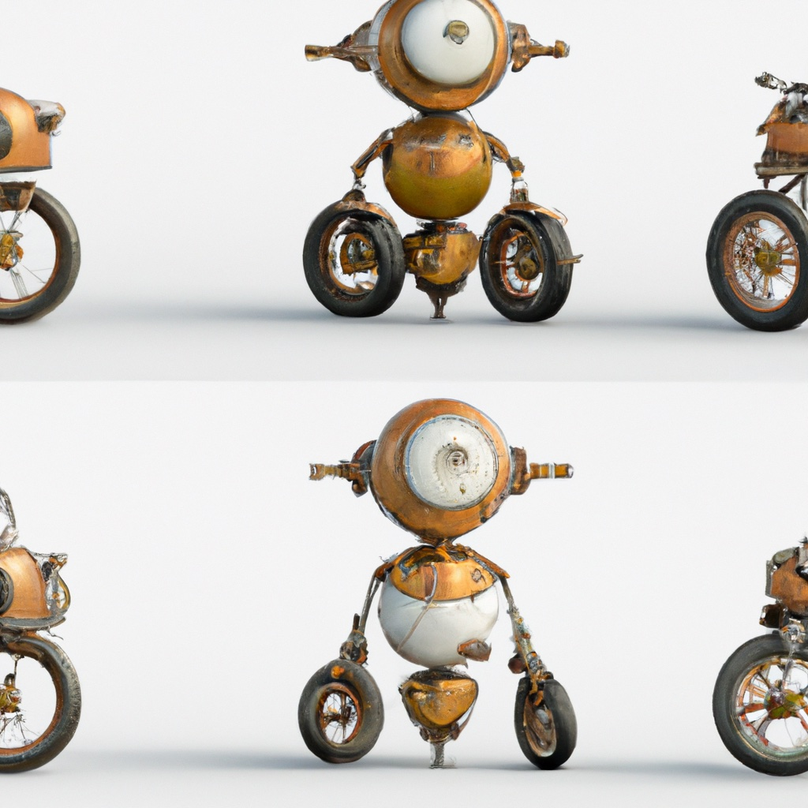

5.1. State Space for a Differential Drive Robot#

Unlike robots with omni-directional wheels, the orientation of a differential drive robot matters.
{kind=link}
So far we have seen two kinds of state space: discrete state spaces (the categories of trash, the rooms in a house) and continuous state spaces that were equivalent to \(\mathbb{R}^2\) (the position of a logistics robot in a warehouse). In this chapter, we consider a robot whose state space includes the orientation of the robot as well as its position. In particular, we consider differential drive robots (DDRs), such as the Duckiebot shown below. DDRs have two actuated wheels that share a common axis of rotation, and typically have a castor wheel in the back to stabilize the robot (without this castor wheel, the DDR would essentially be equivalent to a Segway two-wheeled scooter). Unlike robots with omni-directional wheels, DDRs cannot move in the direction parallel to the wheel axis – they can only move in the steering direction. Because of this, it is necessary to include the orientation of the robot in its state description.

Representing the state of the logistics robot was straightforward, we merely used the x- and y-coordinates of the robot’s center of mass (in the case of a robot with circular shape, the center of this circle). Representing orientation is slightly more complex, and cannot be accomplished by merely encoding properties of a single point on the robot. Instead, we rigidly attach a coordinate frame to the robot, and define the robot state by the position of the origin of this frame and the orientation of the frame with repsect to the world frame. We refer to the robot’s frame as the body-attached frame, or merely the robot frame. For DDR robots, it is typical to place the origin of the body-attached frame at the midpoint between the two wheels, and to align its x-axis with the forward steering direction. The y-axis is coincident with the axis of wheel rotation. This frame is illustrated in the figure below.

In many robotics applications, if we are interested only in geometric aspects of the problem (e.g., if we are not concerned with dynamics, or with forces that are required to effect motion), we use the term configuration space instead of the term state space. A configuration, denoted by \(q\), is a complete specificiation of the location of every point on a robotic system (assuming that a model of the robot is available). The configuration space, denoted by \({\cal Q}\), is the set of all configurations. For a DDR, the position and orientation of the robot provide such a specification; if we know the position and orientation of the robot, we can infer the location of any point on the robot. In this chapter, we will therefore use \({\cal Q} = \mathbb{R}^2 \times [0, 2\pi),\) and \(q = (x,y,\theta)\) to parameterize the configuration space.
As an example, consider the problem of determining the x-y position of the wheel centers for our DDR. If the wheelbase (i.e., the distance between the two wheel centers) is denoted by \(L\), and the robot is in configuration \(q=(x,y.\theta)\), then the x-y coordinates of the left and right wheel centers are given by

We can apply the same geometric analysis to any point on the robot. Consider a point \(p\) that is rigidly attached to the robot. We can define the coordinates of \(p\) with respect to the body-attached frame as \(p^{\mathrm{body}} = [p_x, p_y]^T\). If the robot is in configuration \(q=(x,y.\theta)\), then the x-y coordinates of \(p\) with respect to the world coordinate frame are given by

As shown in these examples, given a model of the robot, knowing the configuration \(q = (x,y,\theta)\) is sufficient to allow us to determine the position of any point on the robot. Nevertheless, the procedure we used above – using simple planar geometry to infer positions in an ad hoc way – is not so satisfying. Furthermore, our choice to represent orientation using \(\theta \in [0,2\pi)\) also has some problems. Mainly these problems are due to wrap-around at \(\theta = 2\pi\). Suppose, for example, that the orientation of the robot is \(2\pi - \epsilon\) for any \(\epsilon > 0\). If the robot rotates in the positive direction, we will see large change in \(\theta\). In fact, no matter how small we make \(\epsilon\), the change in \(\theta\) will be approximately \(2\pi\) when the wrap-around happens. Therefore, our mapping from the actual robot orientation to the representation by \(\theta\) is not continuous. This causes lots of problems, both mathematically and for implementations in code. For now, we will use GTSAM to deal with these difficulties, but in the next chapter we will introduce homogeneous transformations, which provide a solution to all of these difficulties.
5.1.1. Configurations in GTSAM#
In GTSAM, we use the class gtsam.Pose2 to represent a configuration \(q = (x,y,\theta)\):
pose = gtsam.Pose2(12.4, 42.5, math.radians(45))
print(f"pose: {pose}with x={pose.x()}, y={pose.y()}, theta={pose.theta()}")
pose: (12.4, 42.5, 0.785398)
with x=12.4, y=42.5, theta=0.7853981633974483
Note that internally we represent poses using radians, hence the ugly looking number above. Often, it makes sense to specify and display angles in degrees, which makes specifying poses and debugging code easier. Hence, we also provide a “pretty” version that does the conversion for us:
pretty(pose)
Using a real number \(\theta\) to represent orientation, while convenient and familiar, is not ideal as numbers that are offset by 360 degrees represent the same orientation. In other words, there is not a one-to-one relationship between orientation and its representation as a float value. Hence, internally GTSAM stores the orientation as two numbers, the unit vector \((\cos\theta,\sin\theta)\), which is a unique representation.
5.1.2. Densities over Pose#
We also need to think about probability densities over poses.
It is conceptually easy to extend the finite element approximation to include orientation: just discretize \(\theta\) using some chosen resolution, e.g., one bin for every 5 degrees. However, one thing to keep in mind is that angles wrap. Hence, the topology of the “map” in the orientation dimension is like a torus.
A sampling-based representation is much easier: we just add a value \(\theta\) to each sample, or, even better, uses gtsam.Pose2 samples.
Finally, Gaussian densities over pose/orientation are not actually trivial to reason over, and we will postpone discussion of this to the next chapter.